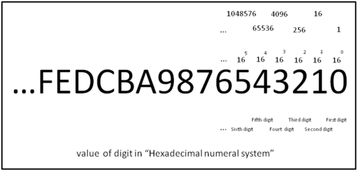

- Computer Grundlagen
- Arbeitsumgebung einrichten
- Python Grundlagen
- Projekt 1: Schachbrettaufgabe
- Quellen zum Selbststudium
Kurs 23720
Thomas Irgang
Erste Schritte mit Python
Kurs 23720
Thomas Irgang
Erste Schritte mit Python
Ziele
Erste Schritte mit Python
- Dieser Kurs kann:
- Bei den ersten Schritten mit Python unterstützen
- Bei Problemen helfen
- Erste Grundlagen vermitteln
- Auf geeignete Quellen zum Selbststudium hinweisen
- Dieser Kurs kann nicht:
- Python beibringen
www.python.org, GPL , via Wikimedia Commons
Inhalte
Erste Schritte mit Python
- Tag 1: Grundlagen und erste Schritte
- Tag 2:
- Tag 3:
- Tag 4:
Tag 1
Erste Schritte mit Python
Computer Grundlagen
Erste Schritte mit Python
- Computer Grundlagen
- Wie arbeitet ein Computer?
- Datenkodierung
- Was ist ein Algorithmus?
Wikipedia: Computer
Computer Grundlagen
Ein Computer [...] ist ein Gerät, das mittels programmierbarer Rechenvorschriften Daten verarbeitet.
Computer sind heute in allen Bereichen des täglichen Lebens vorzufinden, meistens in spezialisierten Varianten, die auf einen vorliegenden Anwendungszweck zugeschnitten sind. So dienen integrierte Kleinstcomputer [...] zur Steuerung von Alltagsgeräten wie Waschmaschinen [...]; in modernen Automobilen dienen sie [...] zur Anzeige von Fahrdaten und steuern in „Fahrassistenten“ diverse Manöver selbst.
Computer Architektur
Computer Grundlagen
- Fast alle aktuellen Computer verwenden die Von-Neumann-Architektur
https://de.wikipedia.org/wiki/Von-Neumann-Architektur - Programme und Daten werden in einem gemeinsamen Speicher abgelegt

Chris-martin, Aeroid, CC BY-SA 3.0
Von-Neumann-Architektur
Computer Grundlagen
- CPU:
- Rechenwerk (ALU)
- Steuerwerk (Control Unit)
- Bus System:
- Speicherwerk
(RAM, Festplatte) - I/O Unit
(Tastatur, Bildschirm)
- Speicherwerk
Chris-martin, Aeroid, CC BY-SA 3.0
Computer Grundlagen
Erste Schritte mit Python
- Computer Grundlagen
- Wie arbeitet ein Computer?
- Datenkodierung
- Was ist ein Algorithmus?
Was ist ein Programm?
Wie arbeitet ein Computer?
- lineare Liste von Befehlen
- auf dem persistenten Speicher (SSD, HDD) abgelegt
- verarbeiten Daten von Eingabegeräten oder dem Speicher
from multiprocessing import cpu_count
# get the number of logical cpu cores
n_cores = cpu_count()
# report the number of logical cpu cores
print(f'Number of Logical CPU cores: {n_cores}')
Befehle
Wie arbeitet ein Computer?
- CPU verarbeitet Befehle
- Befehle aus dem RAM ausgeführt
- Befehle werden linear abgearbeitet
- Befehle haben eine geringe Komplexität (Addition, Subtraktion, Vergleich)

https://de.wikibooks.org/wiki/Assembler-Programmierung_f%C3%BCr_x86-Prozessoren/_Befehlsliste
Programmausführung
Wie arbeitet ein Computer?
- CPU hat einen lokalen Status (Register, ...)
- Programm Counter (PC) zeigt auf den aktuellen Befehl
- Befehle ins RAM geladen
- Befehle können Daten und CPU Status ändern
- Sprungbefehle realisieren Entscheidungen
_-_Start.svg.png)
Onlinecontributorguy, CC BY-SA 4.0 , via Wikimedia Commons
Computer Grundlagen
Erste Schritte mit Python
- Computer Grundlagen
- Wie arbeitet ein Computer?
- Datenkodierung
- Was ist ein Algorithmus?
Binäre Daten
Datenkodierung
- Computer kennen nur 0 und 1
- Nachricht (Syntax): Folge von 0en und 1en
- Information (Semantik): Bedeutung der Nachricht

Graph+sas, CC BY-SA 4.0 , via Wikimedia Commons
Dualsystem (Binärsystem)
Datenkodierung
- Wertigkeit der Stellen: $2^i$
- $101_2 $
$= 1 * 4 + 0 * 2 + 1 * 1 $
$= 5_{10}$

User000name, CC BY-SA 4.0 , via Wikimedia Commons

User000name, CC BY-SA 4.0 , via Wikimedia Commons
Hexadezimalsystem
Datenkodierung
- Wertigkeit der Stellen: $16^i$
- $10_{16} = 1 * 16 + 0 * 1 = 16_{10}$
- $AF_{16} $
$= 10 * 16 + 15 * 1 $
$= 175_{10}$

Hr.hanafi, CC BY-SA 3.0 , via Wikimedia Commons
User000name, CC BY-SA 4.0 , via Wikimedia Commons
Binär in Hex
Datenkodierung
- maximaler Wert einer 4-stelligen Binärzahl:
$8+4+2+1=15$ - maximaler Wert einer 1-stelligen Hexadezimalzahl:
$F_{16} = 15$ - 4 Zeichen binär $XXXX_2$
= 1 Zeichen hexadezimal
Binär in Hex
Datenkodierung
- Binär-Daten lassen sich kompakt Hexadezimal darstellen
- $1100_{2}=12_{10}=A_{16}$
- $1100 0101_{2}$ = 1100 0101 = $A5_{16}$
- 1 Byte = 8 Bit
$XX_{16}$ = $XXXX.XXXX_{2}$
X-Bit Systeme
Datenkodierung
- X-Bit entspricht der Größe der CPU Register
- Microcontroller: 8-Bit (1 Byte) / 16-Bit
Heutige PCs: 64bit (alte PCs: 32bit) - X-Bit ist die Speicherbandbreite
32bit = max. 4GB RAM
64bit = max. 16 Exabyte (16 Milliarden Gigabyte) RAM
Zweierkomplement
Datenkodierung
- Zahlenraum:
$-2^{n-1}, ... , 0, ... -2^{n-1}$ - 8bit: -127...127
- 32bit: -2.147.483.648 ... 2.147.483.648
- Negative Zahlen: Binärwert invertieren und 1 addieren
- 4 = 0000 0100
invertiert: 1111 1011
1 addieren: 1111 1100 = -4
Grenzen der Darstellung
Datenkodierung
- Grenzen der Darstellung können zu Problemen führen
- Reddit: Reddit-Kommentare laufen bei 32-Bit über
- Google: l+f: Integer-Überlauf Gangnam-Style
Gleitkommazahlen
Datenkodierung
- Gleitkommazahlen müssen als Binärmuster darstellt werden
- IEEE 754: $x=$$s$$2^e$$m$
Vorzeichen s (1 bit), Exponent e, Mantisse m
negative Exponenten: Biaswert wird addiert - 32 Bit Darstellung: 3.14
=0 2^1 1.5700000524520874
= 0 1000.0000 10.0100.0111.1010.1110.00010 - Dargestellte Zahl: 3.1399998664855957031250000
Textdarstellung
Datenkodierung
- Kodierung pro Zeichen
- einfachste Kodierung: ASCII
ein Zeichen pro Byte, sehr kleiner Zeichenraum - aktueller Standard: UTF8
variable Zeichenlänge, (fast) alle Zeichen darstellbar
Textdarstellung
Datenkodierung
- Text: Hallo, Welt!
ASCII: 48 61 6c 6c 6f 2c 20 57 65 6c 74 21
UTF-8: 48 61 6c 6c 6f 2c 20 57 65 6c 74 21
UTF-16: 0048 0061 006c 006c 006f 002c 0020 0057 0065 006c 0074 0021 - Zeichen 😊
ASCII: Nicht darstellbar
UTF-8: F0 9F 98 8A
UTF-16: D83D DE0A
Computer Grundlagen
Erste Schritte mit Python
- Computer Grundlagen
- Wie arbeitet ein Computer?
- Datenkodierung
- Was ist ein Algorithmus?
Wikipedia: Algorithmus
Algorithmen
Ein Algorithmus ist eine eindeutige Handlungsvorschrift zur Lösung eines Problems oder einer Klasse von Problemen.
- Finitheit: endlich beschreibbar
- Ausführbarkeit: jeder Schritt muss (eindeutig) ausführbar sein
- Dynamische Finitheit: darf nur endlich viel Speicher verwenden
- Terminierung: darf nur endlich viele Schritte benötigen
- Determiniertheit: muss unter denselben Voraussetzungen das gleiche Ergebnis liefern
- Determinismus: der nächste Schritt muss zu jedem Zeitpunkt eindeutig sein
penubag, CC BY-SA 3.0 , via Wikimedia Commons
https://de.wikipedia.org/wiki/Algorithmus
Tag 1
Erste Schritte mit Python
- Computer Grundlagen
- Arbeitsumgebung einrichten
- Python Grundlagen
- Projekt 1: Schachbrettaufgabe
- Quellen zum Selbststudium
Online IDEs
Arbeitsumgebung einrichten
- Integrated Development Environment (IDE)
Integrierte Entwicklungsumgebung - Online IDEs
bieten einen schnellen Einstieg
sind aber stark eingeschränkt


Lokale Installation: Python 3
Arbeitsumgebung einrichten
- Download:
https://www.python.org/downloads/ - Video-Anleitung: https://youtu.be/VTOnqpE9tO0

Lokale Installation: Visual Studio Code
Arbeitsumgebung einrichten

Tag 1
Erste Schritte mit Python
- Computer Grundlagen
- Arbeitsumgebung einrichten
- Python Grundlagen
- Projekt 1: Schachbrettaufgabe
- Quellen zum Selbststudium
Python Grundlagen
Erste Schritte mit Python
- Der Python Interpreter
- Variablen, Zahlen und Texte
- Schleifen
Der Python Interpreter
Python Grundlagen
- Python ist eine interpretierte Sprache
- Python bietet eine interaktive Konsole

Variablen, Zahlen und Texte
Erste Schritte mit Python
- Der Python Interpreter
- Variablen, Zahlen und Texte
- Schleifen
Variablen, Zahlen und Texte
Python Grundlagen
- Variablen sind "Kisten für Werte"
- Dynamische Typisierung
Kisten können beliebige Werte aufnehmen
>>> a = 5
>>> b = 6
>>> a + b
11
>>> a = 'Hallo'
Variablen, Zahlen und Texte
Python Grundlagen
- Variablen können Text aufnehmen
- print() schreibt Text auf die Konsole
Python Dokumentation - Python unterstützt Format-Strings
um Variablen in Text einzubetten
>>> name = "Max"
>>> text = f"Hallo {name}!"
>>> print(text)
Hallo Max!
Variablen, Zahlen und Texte
Erste Schritte mit Python
- Der Python Interpreter
- Variablen, Zahlen und Texte
- Schleifen
Schleifen
Python Grundlagen
- Schleifen wiederholen Befehle
- Schleifen iterieren über Listen
- Elemente können verwendet werden
- range(start, stop[, step]) erzeugt eine List von Zahlen
Python Dokumentation - Befehle in der Schleife werden eingerückt
>>> list(range(0, 10))
[0, 1, 2, 3, 4, 5, 6, 7, 8, 9]
>>>
>>> summe = 0
>>> for i in range(0, 10):
... summe += i
...
>>> print("Summe:", summe)
Summe: 45
Tag 1
Erste Schritte mit Python
- Computer Grundlagen
- Arbeitsumgebung einrichten
- Python Grundlagen
- Projekt 1: Schachbrettaufgabe
- Quellen zum Selbststudium
Wikipedia: Sissa ibn Dahir
Projekt 1: Schachbrettaufgabe
[...] gewährte er dem Brahmanen einen freien Wunsch. Dieser wünschte sich Weizenkörner: Auf das erste Feld eines Schachbretts wollte er ein Korn, auf das zweite Feld das Doppelte, also zwei, auf das dritte wiederum die doppelte Menge, also vier und so weiter. Der König lachte und war gleichzeitig erbost über die vermeintliche Bescheidenheit des Brahmanen.
[...] Der Vorsteher der Kornkammer meldete nach mehreren Tagen ununterbrochener Arbeit, dass so viel Weizen im ganzen Reich nicht aufgebracht werden könne. [...]
[...] Der Vorsteher der Kornkammer meldete nach mehreren Tagen ununterbrochener Arbeit, dass so viel Weizen im ganzen Reich nicht aufgebracht werden könne. [...]
Aufgabe
Projekt 1: Schachbrettaufgabe
- Teil 1: Berechne die Anzahl der Weizenkörner
- Teil 2: Stelle die Entwicklung graphisch dar
matplotlib

A.Spielhoff, CC0, via Wikimedia Commons
www.python.org, GPL , via Wikimedia Commons
pow
Projekt 1: Schachbrettaufgabe
- pow(base, exp, mod=None)
Python Dokumentation - Berechnet die Potenz
>>> pow(2,1)
2
>>> pow(2,2)
4
>>> pow(2,3)
8
>>> pow(10,3)
1000

A.Spielhoff, CC0, via Wikimedia Commons
www.python.org, GPL , via Wikimedia Commons
Aufgabe
Projekt 1: Schachbrettaufgabe
summe = 0
for feld_nr in range(0,64):
anzahl_auf_feld = pow(2, feld_nr)
print(f"Anzahl der Weizenkörner auf Feld {feld_nr}:", anzahl_auf_feld)
summe += anzahl_auf_feld
print("Anzahl der Weizenkörner: ", summe)
# Alternativ
print("Anzahl der Weizenkörner: ", pow(2, 64) - 1)

A.Spielhoff, CC0, via Wikimedia Commons
www.python.org, GPL , via Wikimedia Commons
Aufgabe
Projekt 1: Schachbrettaufgabe
Anzahl der Weizenkörner auf Feld 0: 1
Anzahl der Weizenkörner auf Feld 1: 2
Anzahl der Weizenkörner auf Feld 2: 4
Anzahl der Weizenkörner auf Feld 3: 8
...
Anzahl der Weizenkörner auf Feld 63: 9223372036854775808
Anzahl der Weizenkörner: 18446744073709551615
Anzahl der Weizenkörner: 18446744073709551615
A.Spielhoff, CC0, via Wikimedia Commons
www.python.org, GPL , via Wikimedia Commons
Tag 1
Erste Schritte mit Python
- Computer Grundlagen
- Arbeitsumgebung einrichten
- Python Grundlagen
- Projekt 1: Schachbrettaufgabe
- Quellen zum Selbststudium
Quellen zum Selbststudium (Deutsch)
Erste Schritte mit Python
- YouTube Video Reihe:
https://www.youtube.com/@Gravitar - https://www.python-kurs.eu/python3_kurs.php
- https://www.python-lernen.de/
- https://www.python-forum.de/
- Buch: Python von Kopf bis Fuß: Aktuell zu Python 3

Youtube, A beautiful Code in Python

python-kurs.eu

python-lernen.de

python-forum.de
Quellen zum Selbststudium (Englisch)
Erste Schritte mit Python
- The Python Tutorial
- The Hitchhiker's Guide to Python
- https://www.python-lernen.de/
- Buch: Introducing Python: Modern Computing in Simple Packages
The Python Tutorial

The Hitchhiker's Guide to Python
Erste Schritte mit Python

Per A.J. Andersson, CC BY-SA 4.0 , via Wikimedia Commons